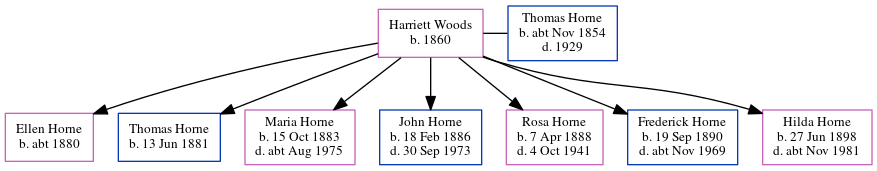

Frederick Sidney Horne 1890 - c1969
[ Home ] | [ Calendar ] | [ Surnames Index ] | [ Errors ] | [ Family History ]A police caterer and the child of Thomas Horne (a brewer's drayman) and Harriett Woods, Frederick Horne, the first cousin twice-removed on the father's side of Nigel Horne, was born in St Pancras, London, England on 19 Sept 18901,2,3 and baptised in Camden, London, England on 16 Nov 1890. He married Annie Elliett at All Saints, Islington, London, England on 29 Jul 19225.
During his life, he was living at Derby Buildings, Britannia Street in St Pancras on 31 Mar 19017, on 2 Apr 19118 and on 19 Jun 19219; at 109 Caledonian Road in Islington in 1922; and at 75 Bingfield Street in Islington in 19316 and on 29 Sept 19391. He served in the army from 1914 to 1920 (soldier Number: 58352, Rank: Private, Corps: Royal Army Medical Corps) He served in the army from 1914 to 1920 (soldier Number: 58352, Rank: Private, Corps: Royal Army Medical Corps)In 1921 he was working at Canteen Committee at -, Hyde Parish.
He died c. Nov 1969 in Wandsworth, London, England3,4.
Parents
- Thomas Warner was born c. Nov 1854
- Harriett was born in 1860
Citations
- 1939 Register - Findmypast (was the head of the household)
- England & Wales births 1837-2006 - Findmypast
- England & Wales deaths 1837-2007 - Findmypast
- England & Wales, Death Index: 1984-2005 Online publication - Provo, UT, USA: The Generations Network, Inc., 2007.Original data - General Register Office. England and Wales Civil Registration Indexes. London, England: General Register Office. © Crown copyright. Published by permission of the Cont
- England & Wales Marriages 1837-2005 - Findmypast
- London, England, Electoral Registers, 1832-1965 Ancestry.com Operations, Inc.
- 1901 England, Wales & Scotland Census - Findmypast (was age 10 and the son of the head of the household)
- 1911 Census for England & Wales - Findmypast (was age 20 and the son of the head of the household)
- 1921 Census Of England & Wales - Findmypast (was age 30 and the son of the head of the household)
Media
Frederick Sidney Horne - Annie Elliett Marriage

WW1 Victory Medal Rolls

1939 Register Transcription - TNA-R39-0662-0662H-009-22
1939 Register - TNA/R39/0662/0662H/009/21
England & Wales marriages 1837-2005 Transcription - BMD-M-1931-2-AZ-000596-133
England & Wales births 1837-2006 Transcription - BMD-B-1890-4-AZ-000257-198
England & Wales deaths 1837-2007 Transcription - BMD-D-1969-4-AZ-000609-105
1901 England, Wales & Scotland Census - GBC/1901/0006707268
1939 Register Transcription - TNA-R39-0298-0298C-008-24
Britain, Campaign, Gallantry & Long Service Medals & Awards - GBM/MCI/1962434
1911 Census For England & Wales - GBC-1911-RG14-00709-0467-3
1921 Census Of England & Wales - GBC/1921/RG15/00743/0403/03
Family Tree
Map
Generated by ged2site. Last updated on Jul 3, 2024
Known Issues
Residence record for 1922 contains no citation
Location for 31 Mar 1901 (Derby Buildings, Britannia Street, St Pancras, London, England) differs from mother's (Britannia Street, St Pancras, London, England)
Listed in the residence for 1931, but spouse Annie Elliett is not
No records of living with anyone
Country not included in country, or misspelt country 'Hyde Parish'
Location for the event between 1914 and 1920 is empty